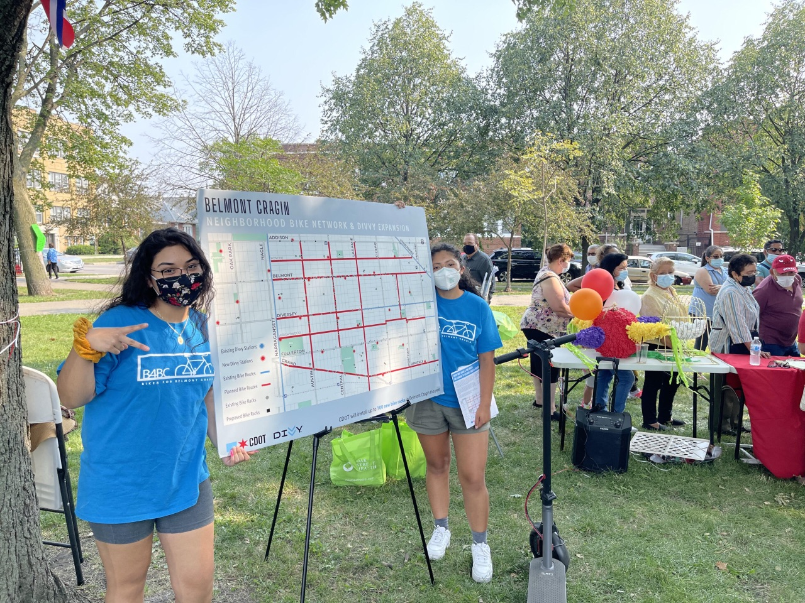

Story 01 / 04 · Chicago, IL
Living Lab · 2021–2023
Bikes for Belmont Cragin.
A neighborhood-led plan that turned bike infrastructure into community infrastructure.

The Northwest Center, a nonprofit in Belmont Cragin, used their Living Lab grant to empower youth, build community, and shine a light on transportation needs in their neighborhood. Youth Transit Ambassadors (YTAs) ran workshops, led community rides, successfully advocated for bike lanes and bike share stations, and participated in state capitol visits to inform their electeds of the transportation needs in their neighborhood.
~0community members signed up for the Divvy D4E income-based membership
0miles of bike lanes added — alongside 13 new Divvy stations
0+trips in 2022; an average of 105 daily trips
0%more trips per capita than other Phase II expansion neighborhoods
“This was my first time joining the Bikes 4 Belmont Cragin group, and what a nice time I had. I brought my two kids ages 11 and 15 and they could not stop talking about how they loved the bike lanes and the food! We connected with some other youth and started a conversation around what protected bike lanes mean to us. I can’t wait to be more involved and to tell others about what is going on in our community.”— Marizol Hernandez · October 2021
The detail that sticks
Read the final report
The Northwest Center staff member who led the Living Lab was so inspired that he went on to found his own youth-based nonprofit dedicated to transportation justice in Chicago. The grant didn't just fund a program — it created a leader.